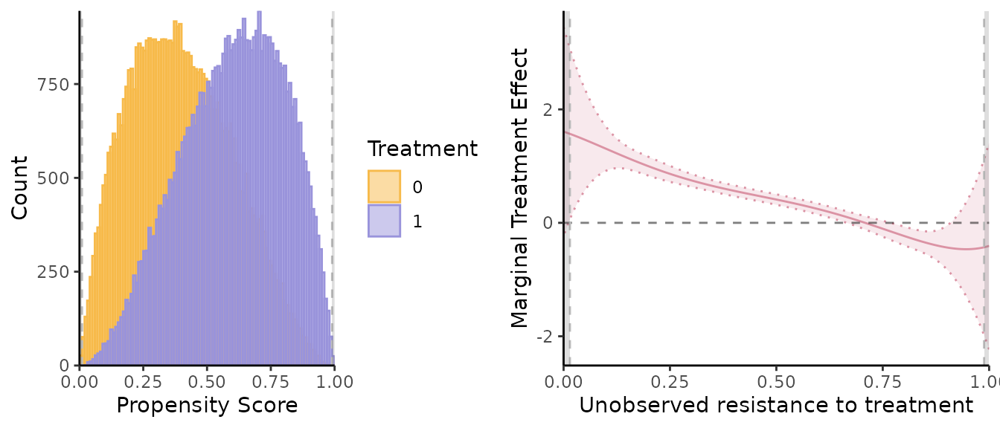
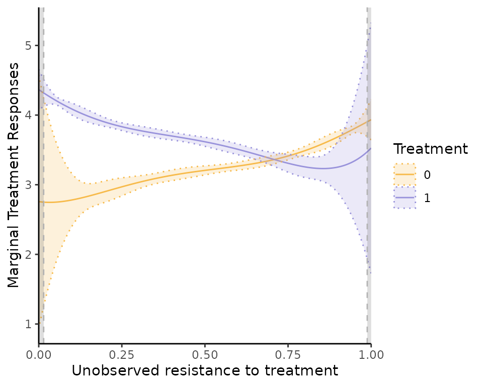

semiIVreg: R package for semi-IV regression
Christophe Bruneel-Zupanc
last modified: 2024-07-26
semiIVreg.RmdOverview
This package provides estimation procedure with semi-IVs, as in Bruneel-Zupanc (2024).
In particular, the main function semiivreg() estimates the
marginal treatment effect (MTE) and marginal treatment response
(MTR).

Installation
The development version of semiIVreg is hosted on
GitHub here.
It can be conveniently installed via the install_github()
function from the remotes
package.
remotes::install_github("cbruneelzupanc/semiIVreg")semi-instrumental variable (semi-IV) regression
The model
semiivreg estimates the marginal treatment effect (MTE)
and marginal treatment response (MTR) of the following model.
The potential outcomes are given by
\[ Y_0 = \delta_{0} + W_0 \beta_0 + X \beta^X_{0} + U_0, \quad \quad \quad (1) \]
\[ Y_1 = \delta_{1} + W_1 \beta_1 + X \beta^X_{1} + U_1, \quad \quad \quad (2) \]
with selection rule
\[ \begin{aligned} D^* &= g(W_0, W_1, X) - V \\ &= - (\alpha + \alpha_0 W_0 + \alpha_1 W_1 + \alpha_{X} X ) - V, \quad \quad \quad (3) \\ \text{ with } \quad D &= \mathbb{I}(D^* > 0), \end{aligned} \]
where
semi-IVs: \(W_0\) (respectively \(W_1\)) are the semi-IVs excluded from \(Y_1\) (resp. \(Y_0\)). Each \(W_0\) and \(W_1\) may contain several variables. Nonparametric identification requires that each \(W_d\) contains at least one excluded variable (see Bruneel-Zupanc (2024)).
Covariates: \(X\) are the covariates that affect both potential outcomes. By default, wants different effect of the covariates across alternatives, (i.e., \(\beta^X_{0} \neq \beta^X_{1}\)). To do so, include the covariates separately in both MTR formulas:
semiivreg(y~d|w0+x|w1+x, data). One can restrict the effect of \(X\) to be the same across both potential outcomes (i.e., \(\beta^X_{0} = \beta^X_{1}\)). To do so, specify:
semiivreg(y~d|w0|w1|x, data)-
Unobservables: \(U_0\) and \(U_1\) are general unobservables (may
include several shocks, some may be the same across alternatives)
affecting the outcomes. \(V\) is a
scalar unobservable that affects the selection. The lower \(V\), the more likely one is to select into
treatment. Nonparametric identification requires independence,
i.e., \((U_0, U_1, V) \perp (W_0, W_1) |
X\).
For estimation here, we additionally assume additive separability of the covariates \(X\), i.e., that \(E(U_d | V, X) = E(U_d | V)\) for both \(d=0,1\).
This assumption is not necessary for the identification, nor for the estimation. But it is a standard simplification that helps the estimation. See Carneiro, Heckman, and Vytlacil (2011), Brinch, Mogstad, and Wiswall (2017) or Andresen (2018) for comparable examples of the estimation of MTE with IVs.
Estimation procedure
The estimation procedure closely follows the counterpart estimation of MTE with standard IVs, see for e.g., Andresen (2018). The command estimates marginal treatment responses and marginal treatment effects, i.e.,
\[ \begin{aligned} MTR_d(u, w_d, x) &= E(Y_d | X=x, W_d=w_d, U_D=u), \\ MTE(u, x, w_0, w_1) &= E(Y_1 - Y_0 | X = x, W_0=w_0, W_1=w_1, U_D=u) \\ &= MTR_1(u, w_1, x) - MTR_0(u, w_0, x), \end{aligned} \]
where \(U_D = F_V(V) \sim \mathcal{U}(0, 1)\) is the normalized unobserved resistance to treatment.
The estimation proceeds in two stages.
1. First stage: propensity score
Estimate the propensity score \(\widehat{P}\) of treatment selection of
equation (3).
By default, the function \(g(\cdot)\)
is given by the simple linear specification above, but the code allows
specifying any other first stage. For example:
By default, the estimation assumes a probit model for the
first stage (i.e., assumes \(V\) is
normally distributed). However, you can specify other models (e.g.,
logit) using the firststage_model argument. In theory, any
specification for the first stage could be added, and it is even
possible to estimate the propensity score outside of the
semiivreg command (this feature is not implemented
yet).
2. Second stage: marginal treatment responses
Estimate the control function \(\kappa_d(P)\) of the potential outcomes \(Y_d\) given the propensity score \(P\) and the covariates \(X\). The control function is estimated with a flexible polynomial transformation of the propensity score. The estimation is done with a stacked regression of the potential outcomes specification (1)-(2):
\[ \begin{aligned} E[Y|W_0, W_1, X, \widehat{P}] = &D \times ( \delta_{1} + W_1 \beta_1 + X \beta^X_{1} + \kappa_1(\widehat{P}) ) + \\ &(1-D) \times ( \delta_{0} + W_0 \beta_0 + X \beta^X_{0} + \kappa_0(\widehat{P})). \end{aligned} \]
where the control functions are sample estimates (using the estimate \(\widehat{P}\)) of their theoretical counterparts:
\[ \begin{aligned} \kappa_1(P) &= E[ U_1 | D=1, W_1, W_0, X,P] = E[U_1|D=1, P] = E[U_1 | U_D \leq P] \\ \kappa_0(P) &= E[ U_0 | D=0, W_1, W_0, X,P] = E[U_0|D=0, P] = E[U_0 | U_D > P] \end{aligned} \]
By default, we estimate flexible polynomials of degree
pol_degree_transform for \(\kappa_0(P)\) and \(\kappa_1(P)\).
About the semi-IVs and covariates, note that \(W_0\) and \(W_1\) can be flexible transformations (polynomial, splines) of specific variables, so the outcome equations are quite flexible (could also specify interactions between \(W_d\) and \(X\)).
Once the second stage equation is estimated, we don’t need to estimate any other parameters, just to take the proper derivatives of the estimated functional form. We have:
\[ \begin{aligned} \widehat{k}_1(u) &= E[ U_1 | U_D=u] = \widehat{\kappa}_1(u) + u \widehat{\kappa}_1'(u) \\ \widehat{k}_0(u) &= E[ U_0 | U_D=u] = \widehat{\kappa}_0(u) - (1-u) \widehat{\kappa}_0'(u) \end{aligned} \]
where the derivatives are easy to compute if \(\kappa\) is a polynomial function.
Then, the Marginal Treatment Responses are given by:
\[ \begin{aligned} \widehat{MTR}_d(u, w_d, x) &= E(Y_d | X=x, W_d=w_d, U_D=u) = \widehat{\delta}_{d} + w_d \widehat{\beta}_d + x \widehat{\beta}^X_{d} + \widehat{k}_d(u) \end{aligned} \]
and the Marginal Treatment Effects are:
\[ \begin{aligned} \widehat{MTE}(u, x, w_0, w_1) = \widehat{MTR}_1(u, w_1, x) - \widehat{MTR}_0(u, w_0, x) \end{aligned} \]
Special Case with Homogenous Treatment Effects
The homogenous treatment effects estimates correspond to the same potential outcome model (1)-(2), with \(U_0 = U_1 = U\).
This leads to known restrictions on the control functions \(\kappa_0(P)\) and \(\kappa_1(P)\) that we impose in the stacked second stage regression. Indeed,
\[ E(U) = 0 = E(U | U_D \leq P) P + E(U | U_D > P) (1-P) \]
So, \(\kappa_0(P) = -\kappa_1(P) \frac{P}{1-P}\), and one can check that it yields \(k_0(u) = k_1(u) = k(u)\).
Thus, the MTE is constant (\(k_1(u) - k_0(u) = 0\), it cancels out), and equal to:
\[ \widehat{MTE}(x, w_0, w_1) = \widehat{\delta}_{1} - \widehat{\delta}_{0} + w_1 \widehat{\beta}_1 - w_0 \widehat{\beta}_0 + x (\widehat{\beta}^X_{1} - \widehat{\beta}^X_{0}). \]
The MTR still varies with \(u\) because \(k(u)\) is not constant, and we also estimate it.
Illustration with simulated Roy model
This illustrates what the semiivreg()command reports for
a semi-IV regression. By default, it reports the common support plot of
the propensity score and the estimated marginal treatment effects
(MTE).
library(semiIVreg)
data(roydata) # load the data from a simulated Roy model
# semi-IV regression
semiiv = semiivreg(y~d|w0|w1, data=roydata) 
One can also easily extract a plot for the marginal treatment responses (MTR):
semiiv$plot$mtr